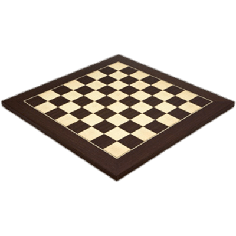
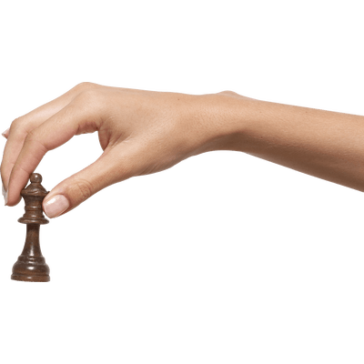
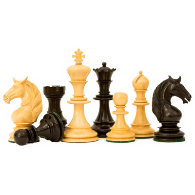
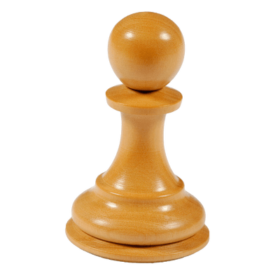
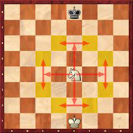
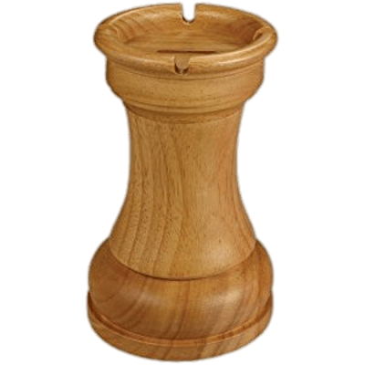
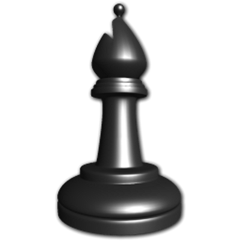
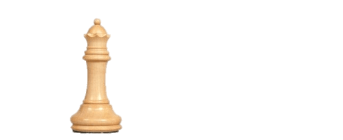
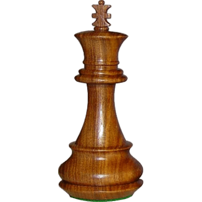

Aprende Ajedrez
El ajedrez se juega entre dos personas, un jugador juega con las piezas blancas y el otro jugador con las piezas negras.
Cada jugador tiene dieciséis piezas al comienzo de la partida: un rey, una dama, dos torres, dos alfiles, dos caballos y ocho peones.
El tablero
El tablero de ajedrez está formado por 64 casillas: ocho filas y ocho columnas. Intercalando los colores negro(o oscuro) y blanco(o claro). El tablero siempre se coloca con una casilla blanca a la derecha de cada jugador.
Las filas
Desde el punto de vista del jugador blanco, las filas están numeradas de la siguiente forma: 1, 2, 3, 4, 5, 6, 7, 8; la fila más baja (o más próxima al jugador de blancas) tiene el número 1, y la fila superior (más próxima al jugador de negras) tiene el número 8.
Las columnas
Las columnas se denominan, de izquierda a derecha, a, b, c, d, e, f, g, h para el jugador de blancas. Y al inverso para el jugador de negras, de izquierda a derecha h, g, f, e, d, c, b, a. Por tanto, todas las casillas se definen con una letra y un número, por ejemplo, la casilla de la esquina inferior izquierda del blanco se llama "a1" y la casilla inferior izquierda del negro es "h8".
Posición de las piezas
Al comienzo de la partida, las piezas se colocan de la siguiente manera:
El jugador con blancas coloca en la primera fila de izquierda a derecha: 1 torre, 1 caballo, 1 alfil, 1 dama, 1 rey, 1 alfil, 1 caballo y 1 torre. En la segunda fila coloca los 8 peones.
El jugador con negras hace lo mismo con sus piezas pero en la octava fila de izquierda a derecha: 1 torre, 1 caballo, 1 alfil, 1 rey, 1 dama, 1 alfil, 1 caballo y 1 torre. En la septima fila coloca los 8 peones.

Movimientos
Comienza moviendo siempre el jugador con piezas blancas, después mueve el negro y así hasta que acaba la partida.
Un movimiento consiste en mover una pieza a una casilla diferente, siguiendo las reglas del movimiento de las piezas. Las piezas no pueden pasar por una casilla que ya esté ocupada por una pieza del mismo bando o del rival. A excepcion del caballo, que si puede saltar por encima de otras piezas. Tampoco se puede mover una pieza a una casilla que ya esté ocupada por otra pieza del mismo color. Si la casilla está ocupada por una pieza de otro color(una pieza del rival), la pieza del contrincante es "comida" y quitada del juego por el resto de la partida.
Piezas
El peón
El peón se mueve de manera diferente para desplazarse que para comer. Cuando un peón no toma, se mueve hacia adelante pasito a pasito, es decir, de una casilla cada vez por su columna. Solo hay una excepción a esta regla que es cuando el peón no se ha movido en absoluto, es decir, cuando el peón se encuentra todavía en la segunda fila o en la séptima, el peón puede hacer un doble paso, es decir, mover dos casillas de una vez. Por ejemplo, un peón blanco en "d2" se puede mover a "d4" en un solo movimiento.
Cuando quieras comer con el peón lo harás en diagonal hacia adelante. Por ejemplo, un peón blanco situado en la casilla "e4" puede comer una pieza del rival que esté en la casilla "f5" o "d5", quedando el peón en la casilla que comió y retirando la pieza capturada.
Captura al paso
Hay una regla especial, llamada “captura al paso”. Cuando un peón hace una jugada desde la segunda fila hasta la cuarta (o desde la séptima hasta la quinta si eres negras), y hay un peón enemigo en una casilla adyacente en la cuarta fila (o en la quinta para las negras), este peón enemigo puede capturar nuestro peón en diagonal a la casilla que era protegida por él.
Coronación
Los peones que llegan a la última fila del tablero coronan, la octava para los peones blancos y la primera para los peones negros. Esto quiere decir que el peón se convierte en la pieza que quieras, una dama, un caballo o un alfil.

El caballo
El caballo se coloca entre la torre y el alfil.Este hace un movimiento en forma de "L" que consiste en un primer paso en una dirección horizontal o vertical, y luego un paso en diagonal en una dirección hacia fuera. El caballo puede pasar por encima de piezas compañeras o del rival. Y solo captura o come si en la casilla que termina su recorrido hay una pieza contraria.
La torre
La torre se ubica en la esquina del tablero y se mueve en línea recta, horizontal o verticalmente. La torre no puede saltar sobre otras piezas, es decir: todas las casillas entre la casilla donde la torre comienza su movimiento y donde termina la torre su movimiento deben estar vacías.
El alfil
El alfil se posiciona al lado del caballo y mueve en línea recta diagonal. Al igual que sucede con la torre, tampoco puede saltar sobre otras piezas. Recordar que cada jugador cuenta con un alfil que se mueve solo por las casillas blancas y otro que solo se mueve por las casillas negras.
La dama
La dama se situa en la columna "d" de dama y se desplaza con los movimientos combinados de la torre y el alfil, es decir, la dama puede moverse en cualquier línea recta, horizontal, vertical o diagonal.
El rey
El rey se encuentra al lado de la dama. Este se puede mover a una casilla en cualquier dirección horizontal, vertical o diagonal. Hay un tipo especial de movimiento, realizado por el rey y por la torre de forma simultánea, llamado enroque.
El enroque
Bajo ciertas reglas, el rey y la torre se pueden mover de forma simultánea enrocándose. Pero hay algunas condiciones que deben cumplirse:
- El rey que hace el enroque no ha tenido que moverse aún en la partida.
- La torre que hace el enroque no se ha tenido que mover tampoco.
- El rey no puede estar en jaque.
- El rey no puede pasar al enrocarse por una casilla amenazada por una pieza del rival.
- Tampoco puede acabar en una casilla que esté amenazada por una pieza enemiga, ya que en ese supuesto el rey estaría en jaque.
- Todas las casillas entre la torre y el rey antes de que se produzca el enroque deben estar vacías.
¿Cómo se realiza el enroque? El rey mueve dos casillas hacia la derecha o hacia la izquierda y la torre pasa delante de él y se ubica a su lado en la misma fila.

El Jaque
Cuando el rey de un jugador es atacado por alguna de las piezas del rival, se dice que el rey está en jaque.
Está prohibido hacer una jugada que sitúe al propio rey en una posición de jaque.
El Jaque Mate
Cuando un jugador está en jaque, y no tiene forma de defenderse se dice que está en jaque mate y esto significa que ha perdido la partida.
Hay tres formas diferentes posibles para evitar un jaque:
- Mover el rey a una casilla en la que no esté en jaque.
- Comer la pieza que da el jaque.
- Interponer una pieza entre la pieza atacante y nuestro rey.
Tablas
Se denomina tablas al empate entre los contrincantes. Las razones por las cuales se puede llegar a este resultaso son varias:
Ahogado
Se presenta cuando un jugador en su turno, sin estar en jaque, no puede realizar ningún movimiento legal.
Insuficiencia de material
Se llega a esta situación cuando ninguno de los jugadores tiene material suficiente para dar mate al rey contrario.
Triple repetición de posición
La partida es tablas si el jugador que está en juego reclama correctamente, cuando por lo menos por tercera vez la misma posición va a repetirse o acaba de producirse.
Regla de los cincuenta movimientos
Si al cabo de 50 jugadas entre ambos jugadores, no se decide la partida, y no se produce una captura o se avanza un peón, la partida termina en tablas si uno de los jugadores lo solicita antes de que haya jaque mate.
Común acuerdo
Después de hacer una jugada, un jugador puede proponer un empate: su oponente puede aceptar la propuesta (en cuyo caso la partida termina y es un empate) o rechazar la propuesta (en cuyo caso la partida continua).
Video tutorial
Fuente: thezugzwangblog:reglas del ajedrez
Video: Genial
Imágenes: Stickpng